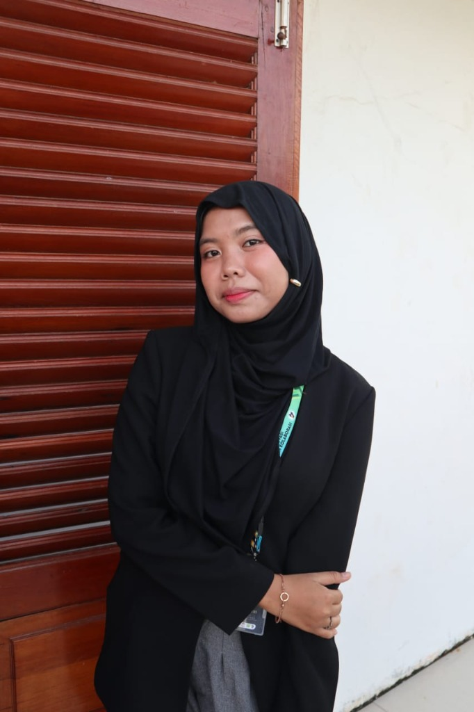

Nia Syahfitri
Mahasiswa Teknik Informatika UMRAH
"Mengembangkan Solusi Teknologi yang Andal, Berintegritas, dan Menjunjung Tinggi Etika Profesi IT"

Dashboard Utama
Halo, Saya Nia!
Saya adalah mahasiswi semester 6 Teknik Informatika di Universitas Maritim Raja Ali Haji (UMRAH). Fokus minat saya terletak pada Front-End Development, UI/UX Design, dan pendigitalisasian UMKM lokal. Website ini dirancang untuk mendemonstrasikan hasil proyek koding akademik serta pemahaman saya mengenai pentingnya Etika Profesi IT dalam dunia rekayasa perangkat lunak.
💼 Komitmen Etika Profesi IT
Sebagai tenaga ahli IT, integritas moral adalah jangkar. Saya mengintegrasikan prinsip kerahasiaan data pribadi, hak kekayaan intelektual (HAKI), dan transparansi informasi di setiap sistem.